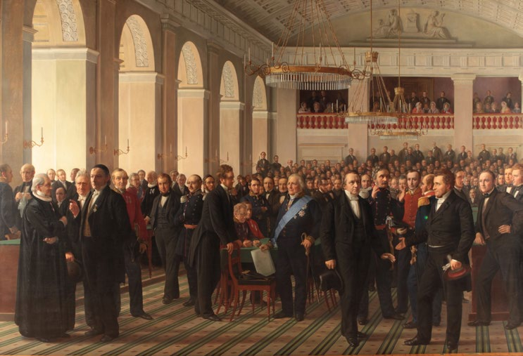
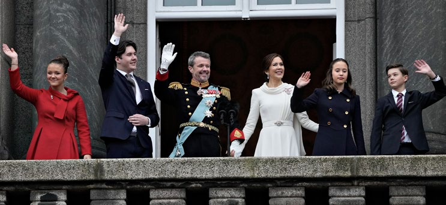

Fakta-ark 11: Demokrati og
Áudio
sidde 61
Fakta-ark 11: Demokrati og grundloven
Læremateriale Til Medborgerskabsprøven
sidde 62
Danmark er et demokrati. Det viser sig fx både gennem regler for valg, ved de demokratiske rettigheder og i en demokratisk kultur.
Læremateriale Til Medborgerskabsprøven Fakta-Ark 11: Demokrati Og Grundloven
Når der er valg, er det borgerne, der vælger politikerne til Folketinget, kommunal bestyrelser, regionsråd og Europa-Parlamentet, og valgene er frie og hemmelige*.
Borgerne har også rettigheder, som giver dem frihed til at gøre, hvad de vil, blot de overholder lovene. Myndighederne, som fx politiet eller kommunen, må som udgangspunkt ikke blande sig i, hvad borgerne laver. Borgerne har fx frihed til at danne foreninger og til at have den religion, de vil.
Der er desuden mange foreninger i Danmark, der fungerer som et slags minide mokrati, hvor medlemmerne vælger ledelsen – og afsætter den – hvis der opstår uenighed mellem medlemmer og ledelse. Demokratiet er på den måde også med til at præge* samfundet og kulturen mere generelt.
Danmarks Riges Grundlov er Danmarks forfatning*. Til daglig kaldes den ofte for grundloven. Grundloven indeholder de vigtigste regler om Danmarks styreform, og grundloven sikrer borgerne en række fundamentale rettigheder. De øvrige love i Danmark må ikke stride mod grundloven.
Dette fakta-ark handler om: • Grundloven • Det danske monarki • Statsmagtens tredeling
Danmark fik sin første demokratiske forfatning, grundloven, i 1849. Siden 1849 har man kun ændret grundloven nogle få gange. Sidste gang var i 1953. Grund loven er landets øverste lov. Det er sværere at lave om på grundloven end på andre love. Hvis grundloven skal ændres, er det ikke nok, at et flertal i Folke tinget vil lave den om.Grundloven.
Grundloven – Danmarks Forfatning
Grundloven.
sidde 63
En ændring af grundloven skal først vedtages af det siddende Folketing. Herefter skal der holdes nyvalg til Folketinget, og så skal det nye Folketing vedtage* lovforslaget i uændret form. Derefter skal der være folkeafstemning om forslaget. Forslaget kan kun vedtages, hvis et flertal af dem, der deltager i folke afstemningen, og mindst 40 procent af alle vælgere, stemmer for det.
Læremateriale Til Medborgerskabsprøven Fakta-Ark 11: Demokrati Og Grundloven
Siden grundloven blev vedtaget i 1849, er demokratiet på flere punkter blevet styrket. Fx fik kvinderne stemmeret til Folketinget med ændringen af grundloven i 1915. Valgretsalderen er også blevet sat ned flere gange. I 1849 skulle mændene være 30 år for at stemme til Folketinget, mens man kun skulle være 25 år for at blive valgt. I dag skal man være 18 år for at stemme og blive valgt. Grundloven giver borgerne en række frihedsrettigheder, som betyder, at borgerne kan sige og gøre bestemte ting uden først at få tilladelse af myndighederne.Debat mellem partilederne i 2026. Foto: Mads
Debat mellem partilederne i 2026. Foto: Mads Claus Rasmussen/Ritzau Scanpix.
Ytringsfriheden dækker over retten til offentligt at sige og skrive det, man mener. Men der er en begrænsning i ytringsfriheden, fordi ytringerne* ikke må være ulovlige. Det betyder, at lovgivningen kan sætte grænser for, hvilke ytringer der skal være strafbare. Fx er injurier* strafbare. Det kan ytringer, som er i strid* med racismeparagraffen* også være. Myndighederne skal dog ikke først godkende, hvad man siger og skriver, før man offentliggør det. Men hvis det viser sig at være ulovligt, kan man bagefter blive straffet.
Forsamlingsfriheden sikrer retten til at mødes til fx offentlige møder og demon strationer. En forsamling skal ikke først godkendes af politiet, før den kan holdes, men man skal give politiet besked først, hvis man ønsker at holde offentlig forsamling. Hvis man ikke underretter politiet først, kan man stadig holde forsamlingen, men man kan få en bøde for ikke at underrette om den senest 24 timer i forvejen.
Foreningsfriheden sikrer retten til at danne foreninger med lovligt formål. Det kan fx være foreninger med idrætslige, politiske, kulturelle eller sociale formål. Der skal ikke indhentes tilladelse fra myndighederne til at oprette en forening. Foreningsfriheden er en væsentlig del af demokratiet i det danske samfund.

sidde 64
Foreningsfriheden er dog begrænset. Grundloven siger, at foreninger, der har et voldeligt* formål, kan opløses. Det er domstolene, der afgør, om en forening skal opløses, fordi foreningen har et voldeligt formål.
Læremateriale Til Medborgerskabsprøven Fakta-Ark 11: Demokrati Og Grundloven
Grundloven sikrer også religionsfriheden. Religionsfriheden betyder, at man selv kan vælge religion, og at man har ret til at dyrke sin religion, så længe man respekterer nogle grundlæggende regler. Det fremgår dog også af grundloven, at den danske folkekirke har en særstilling*, og at den understøttes* af staten. Det betyder dog ikke, at staten ikke må understøtte andre religioner, hvis man ønsker det, fx ved at stille en grund til rådighed* for en kirke, et tempel eller en moske.Den Grundlovsgivende Rigsforsamling. Maleri af Constantin Hansen (1860-64).
Grundloven beskytter også boligens ukrænkelighed. Det betyder bl.a., at politiet som udgangspunkt ikke må gå ind i folks hjem, uden at det er godkendt af en dommer.
Grundloven beskytter også den personlige frihed. Den personlige frihed betyder blandt andet, at en anholdt inden 24 timer skal stilles for en dommer. Dommeren skal så afgøre*, om den anholdte skal løslades, eller om den pågældende fortsat skal være frihedsberøvet*.
Den Grundlovsgivende Rigsforsamling. Maleri af Constantin Hansen (1860-64).

sidde 65
Det Danske Monarki
Læremateriale Til Medborgerskabsprøven Fakta-Ark 11: Demokrati Og Grundloven
Danmark er et monarki. Det betyder, at det danske statsoverhoved er en monark, dvs. en konge eller en dronning.
Kong Frederik 10. er ikke valgt af folket, men har arvet tronen. Han arvede tronen i 2024 efter sin mor, Dronning Margrethe 2., der havde arvet den efter sin far, Kong Frederik 9. Efter Frederik 10. vil tronen gå i arv til Kronprins Christian. Når monarken dør, er det det ældste barn, som arver tronen.
Kong Frederik 10. har ingen politisk magt. Han har nogle officielle funktioner, når der skal laves en ny regering, og han underskriver landets love sammen med ministrene. Men det er ikke kongen, der bestemmer, hvem der skal danne rege ring, hvem der skal være ministre, eller hvad der skal stå i lovene. Og kongen udtaler sig ikke offentligt om politik.
Kongen rejser ofte rundt og besøger forskellige dele af Danmark. Han rejser også på statsbesøg i andre lande. Dvs., at han besøger andre landes konger, dronninger eller præsidenter. På den måde repræsenterer kongen Danmark i udlandet og er med til at skabe opmærksomhed om Danmark. Der er også politikere, erhvervsfolk og embedsmænd med på statsbesøg for bl.a. at lave handelsaftaler. Det kan fx være med til at øge* den danske eksport.
Kong Frederik 10. har siden 2004 været gift med dronning Mary, som oprindeligt kommer fra Australien. Sammen har de fire børn (kronprins Christian, prinsesse Isabella samt tvillingerne prins Vincent og prinsesse Josephine).
Danmarks første frie forfatning blev underskrevet i 1849. Inden havde man haft næsten 200 år med enevælde siden 1660-61. Enevælden var en styreform, hvor kongen havde magten alene. Danmarks sidste enevældige konge var Frederik 7. Han blev konge i 1848 og afgav samme år sin enevældige magt. Den nuværende grundlov er fra 1953.Kong Frederik 10. sammen med Dronning Mary og deres fire børn (fra venstre) prinsesse Isabella, kronprins Christian, prinsesse Josephine og prins Vincent. Foto: Kongehuset.
Der er stor opbakning* til monarkiet i Danmark. Når kongen rejser rundt i landet, er der altid mange tilskuere. Og hvert år på nytårsaften den 31. december holder kongen en nytårstale, som vises i fjernsynet. Den ses af mange borgere i Danmark.
Kong Frederik 10. sammen med Dronning Mary og deres fire børn (fra venstre) prinsesse Isabella, kronprins Christian, prinsesse Josephine og prins Vincent. Foto: Kongehuset.
sidde 66
Statsmagtens Tredeling
Læremateriale Til Medborgerskabsprøven Fakta-Ark 11: Demokrati Og Grundloven
Statsmagten i Danmark er tredelt i den lovgivende, udøvende og dømmende magt. Det vil sige, at statsmagten ikke er samlet ét sted.
Den lovgivende magt er hos rege ringen og Folketinget i forening*. De fleste lovforslag fremsættes* af regeringen, og det er Folketinget, der vedtager dem. Lovforslaget skal derefter underskrives af kongen og en minister. Når lovforslaget er underskrevet bliver det til lov, der skal offentliggøres.
Folketingssalen.Retten på Frederiksberg.
Den udøvende magt er hos rege ringen. Det betyder, at ministrene sammen med embedsmændene i ministerierne og andre offentlige myndigheder sikrer, at lovene bliver ført* ud i livet og overholdt.
Den dømmende magt er hos domsto lene, som afgør* retssager. Domsto lene er uafhængige*. Det betyder, at dommerne kun skal rette sig efter lovene. Politikerne kan ikke bestemme, hvordan domstolene skal afgøre konkrete retssager.
Idéen med denne opdeling af magten er bl.a., at Folketinget kan kontrol lere regeringen, og at domstolene kan vurdere, om en afgørelse, som en offentlig myndighed har truffet, er lovlig eller ej. Desuden kan domsto lene vurdere, om en lov er forenelig med grundloven.Folketingssalen.
Retten på Frederiksberg.
Fonte: Læremateriale til Medborgerskabsprøven, SIRI.